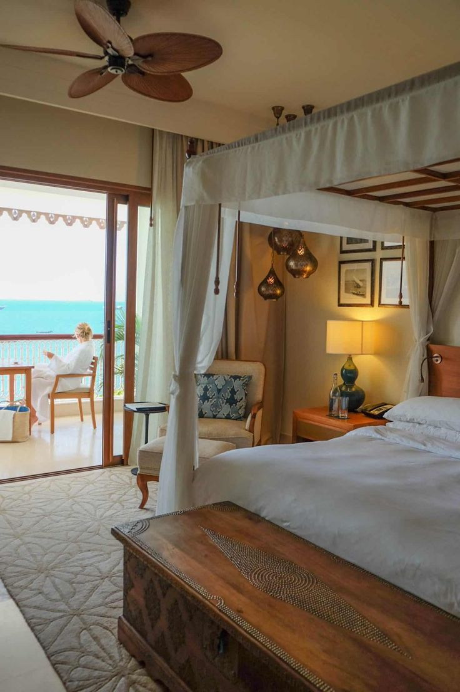
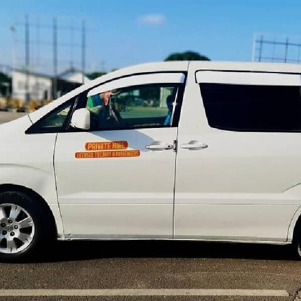

Professional Tour Guides.
Our team of guides is highly trained, experienced, and passionate about showcasing the of Zanzibar and Tanzania. They possess extensive knowledge of the country's history, culture, top tourist attrection, and wildlife, ensuring every journey is both education and enjoyable. Dedicated to providing exceptional customer service, our guides prioritize your safety, comfort, and satifcation while creating unforgettable travel experiences tailored to your interest.

Comfortable Accommodation.
Enjoy a relaxing stay in carefilly selected hotels, lodges, resorts, and luxury safari camps that meet high standards of comfort and hospitality. We partner with trusted accommodation provide to ensure clean, secure, and welcoming environments with modern amenities. Whether you prefer luxury, mid-range, or budget accommodation, we offer options that enhance your travel experience and allow you to unwind after each day's adventure.

Safe and Reliable Transportation.
Travel with confidence using our modern, well-maintained vehicles operated by skilled and experienced drivers. We place the highest priority on safety, punctuality, and reliability, ensuring smooth transportation throughout your journey. From airport transfer to hotels and safaris, our tansport services are designed to provide comfort, convenience, and peace of mind every step of way.

24/7 Customer Support.
Our dedicated customer support team is available 24 hours a day, 7 days a week to assist you before,during, and after your trip. Whether you need travel advice, booking assistance, itinerary changes, or emergency support, we are always just a phone call or message away. Our commitment is to provide prompt, friendly, and professional assistance whenever you need it, ensuring a stress-free and enjoyable travel experience.